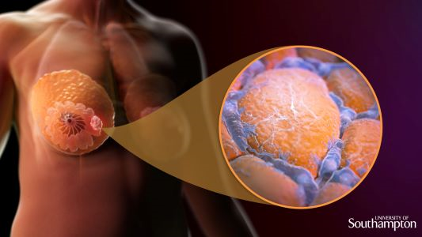
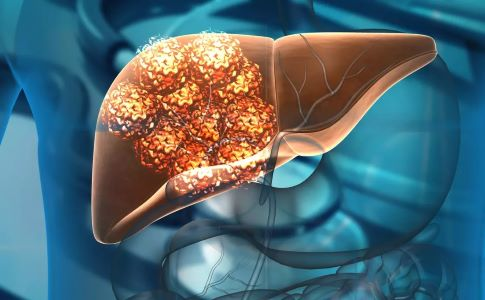

Santé PLUS
Le cancer est une maladie caractérisée par une croissance cellulaire anormale et incontrôlée. Normalement, les cellules du corps suivent un cycle de croissance, de division et de mort programmée (apoptose). Dans le cas du cancer, ce processus est pertubé. Les cellules cancéreuses continuent de croître et de se diviser sans contrôle, formant des tumeurs, et peuvent envahir d'autres parties du corps (métastase). Il existe plus de 100 types de cancers différent, affectant divers organes et systèmes. Ceux les plus répandu sont le cancer du sein, du poumon, de la prostate, de la peau, du sang, de l'utérus, du côlon, du foie...

Mécanisme : il se développe dans les cellules du sein : les cellules des glandes mammaires ou des
canneaux lactifères commencent à se diviser de manière incontrôlée en raison de mutations génétiques, formant une tumeur.
Ces cellules peuvent envahir les tissus environnants et se propager aux gamglions lymphatiques ou à d'autres parties du
corps.
Causes : mutations génétiques, hormomes, antécédents familiaux, consommation d'alcool.
Symptômes : masse dans
le sein, écoulement du mamelon, modification de la forme du sein.
Traitements : chirurgie, radiothérapie, chimiothérapie,
hormonothérapie.
Mécanisme : les cellules des poumons, souvent celles tapissant les bronches, généralement en réponse
à des agents cancérigènes comme la fumée de cigarette. Ces cellules anormales se multiplient et forment des tumeurs qui obstruent
les voies respiratoires et peuvent se propager à d'autres organes.
Causes : tabagisme, expositions à des substances toxiques,
polution.
Symptômes : toux persistantes, crachats sanguinolents, essoufflement.
Traitements : chirurgie, radiothérapie,
chimiothérapie, immunothérapie.
Mécanisme : les cellues glandulaires de la prostate se divise de façon anormale, souvent en
réponse à des déséquilibres hormonaux. La croissance de la tumeur peut comprimer l'urète et envahir les structures voisines
ou se propager par les vaisseaux sanguins ou lymphatiques.
Causes : âge, antécédents familiaux, alimentation riche en graisse.
Symptômes : difficulté à uriner, sang dans l'urine ou sperme, douleur osseuse en cas de métastase.
Traitements : chirurgie, radiothérapie, hormonothérapie, surveillance active.
Mécanisme : les cellules productrices de pigments de la peau (mélanocytes) deviennent cancéreuses
principalement en réponse à des dommages causés par des rayons UV. Ces cellules se multiplient de manière anarchique,
formant des tumeurs qui peuvent envahir des couches plus profondes de la peau et se propager à d'autres parties du corps.
Causes : exposition aux rayons UV, antécédents de coups de soleil graves.
Symptômes : changement dans les grains de
beauté (taille, couleur, forme), saignement ou démangeaisons de la peau.
Traitements : chirurgie, immunothérapie,
radiothérapie, thérapie ciblée.
Mécanisme : la leucénie affecte principalement la moelle osseuse, où les cellules souches
sanguines se développent en globules blancs anormaux. Ces cellules cancéreuses, incapables de fonctionner normalement, se
multiplient rapidement et envahissent le sang, ce qui réduire la capacité du sang à combattre les infections et à transporter
l'oxygène.
Causes : mutations génétiques, exposition à des radiations, certaines infections virales.
Symptômes : fatigue, infections fréquentes, saignements faciles.
Traitements : chimiothérapie, greffe de moelle
osseuse, thérapie ciblée.
Le cancer de l'utérus se développe généralement dans l'endomètre, la muqueuse interne de l'utérus. On parle alors de cancer de l'endomètre, qui est la forme la plus courante de ce cancer.
Le cancer du côlon est une forme de cancer colorectal qui affecte la partie finale du tube digestif. Il commence souvent par la formation de polypes dans le côlon, qui peuvent devenir cancéreux avec le temps.
Le cancer du foie peut être primaire (lorsqu'il commence dans le fois, comme dans le cas de l'hépatocarcinome) ou secondaire (lorsqu'il provient d'autres organes et propage au foie).
En conclusion, le cancer est une maladie complexe qui se manifeste sous diverses formes selon l'organe touché et les mécanismes biologiques en jeu. Chaque type de cancer à ses propres causes, souvent liées à des facteurs génétiques, environnementaux ou liées au mode de vie. Les symptômes varient, mais détecter la maladie à un stade précoce peut considérablement améliorer les chances de traitement efficace. Les options de traitements allant de la chirurgie à la thérapie ciblée, sont de plus en plus personnalisés pour maximiser les chances de guérison. La prévention, la détection et les avancées en récherche médicale restent des éléments clés dans la lutte contre le cancer.
{kind=link}
{kind=link}
{kind=link}
{kind=link}
{kind=link}
{kind=link}
{kind=link}
{kind=link}